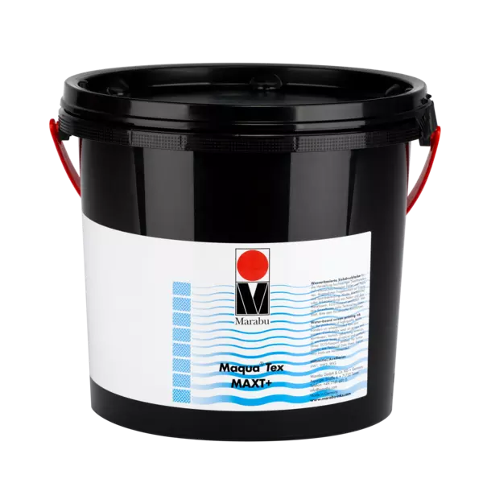

WATER-BASED
Maqua® Tex MAXT+
Maqua® Tex MAXT+ is a water-based, one- or two-component screen printing ink for producing high-quality textile transfers on release-coated films and papers. Reliable and flexible in use, even in combination with digitally printed motifs. For the best quality with a soft and pleasant feel.
Request a quote